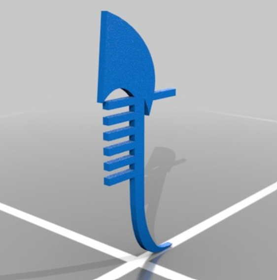
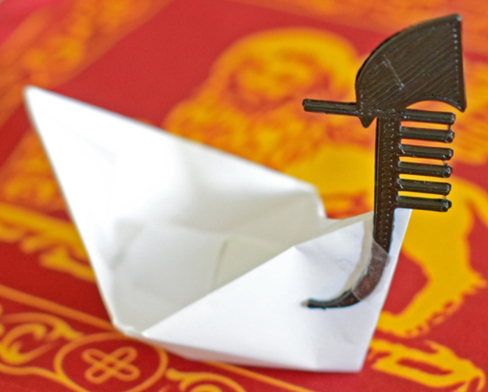

Final Project Proposal: Digitally Fabricating An Espresso Knock Box

Concept
Being an amateur barista and all-around coffee connoisseur, last year I bought myself this De'Longhi espresso maker for my birthday:

Thinking about my final project, I thought it would be exciting to use digital fabrication techniques to make a new kitchen tool that I could incorporate into my daily coffee routine, something practical that would make the systematic espresso-making process even more enjoyable, efficient, and as a stretch goal, maybe even more environmentally friendly!

For inspiration, I searched Thingiverse to look for things that others have made related to my kitchen use case.
To have a physical model of a gondola and iron prow to use for further ideation, I 3D printed these STL files that I found online. I scaled the gondola down by 90% just to have a model that I could hold in one hand for reference, and I scaled down the iron prow as well so that I could get a sense for how I might need to modify the object in order to use it effectively to create a 3D printed mold:

Gondola body STL file
Gondola iron prow STL file